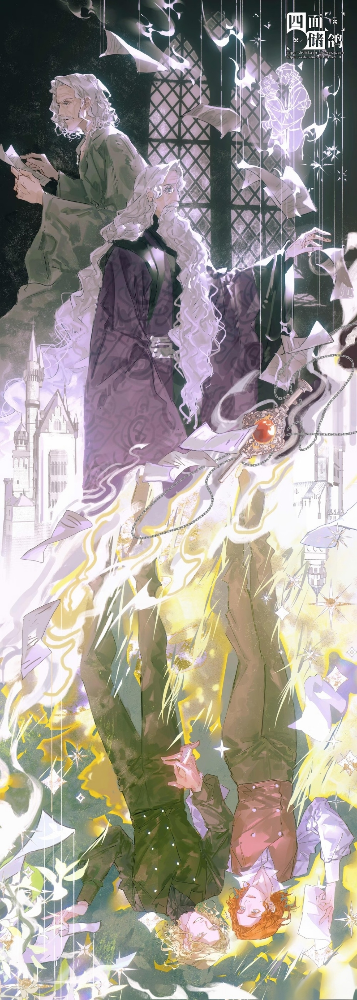
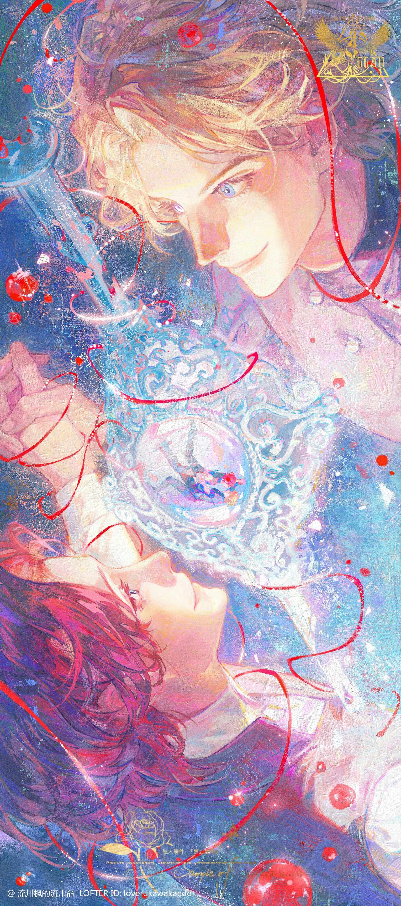
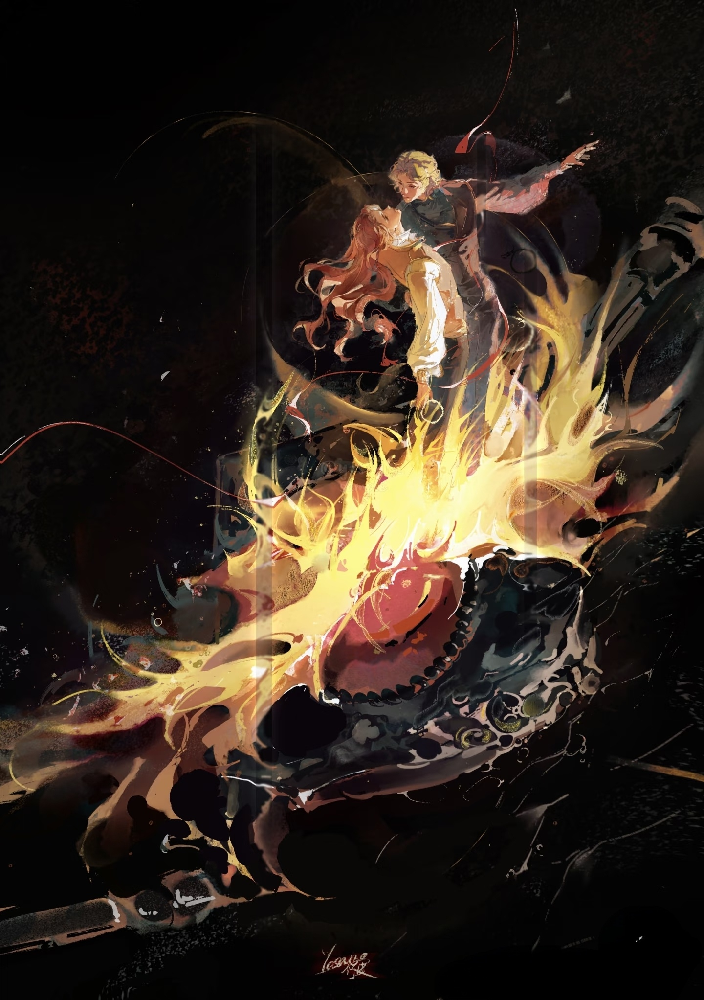
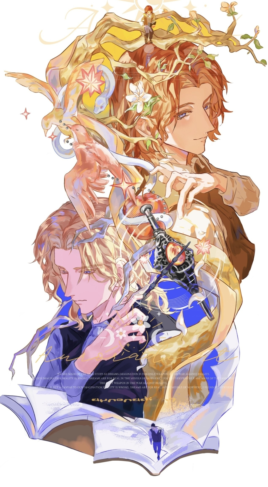
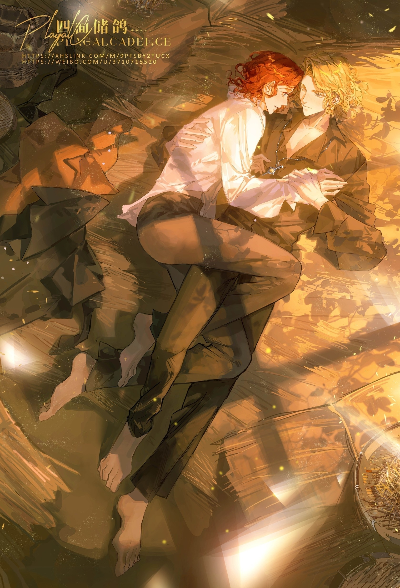
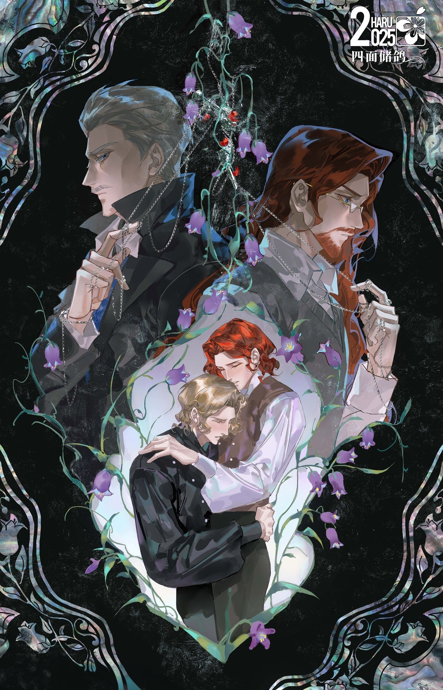

Gellert Grindelwald × Albus Dumbledore
"吾与吾爱皆亡于高塔，君与君心皆留于盛夏"
→出于我的私心，我想给大家看看这个流量不高但是非常震撼的混剪← 走进这段故事 ↓邓布利多家原本居住在沃土原，阿不思的妹妹阿利安娜四岁在家中后院施法时被几名麻瓜男孩看见，他们想让小姑娘教他们变魔法，可他们做不到。在嫉妒心驱使下，他们袭击了她，等阿不思的父亲赶来时一切都已经晚了。魔法转入阿利安娜体内，逼疯了她，她成了一位年幼的默然者（注1）。而当时的巫师界《保密法》规定，巫师不能向麻瓜使用任何除"一忘皆空"以外的魔法，因而邓布利多家替妹妹报仇的合法途径被彻底封死。然而阿不思的父亲帕西瓦尔无法对女儿受虐待致残一事袖手旁观，他用魔法袭击了那几个施暴的麻瓜男孩，又在魔法部前来审问时对袭击的缘由闭口不谈（因为一旦阿利安娜是默然者的真相暴露，她就会被强制关进圣芒戈医院隔离病房，终身不能再见天日）。最终帕西瓦尔被判处阿兹卡班终身监禁，而邓布利多家也在同一年搬迁至戈德里克山谷。
帕西瓦尔入狱后，母亲坎德拉肩负起了养育三个孩子的重担。阿不思天资聪颖，早早进入霍格沃茨读书，在校深受老师喜爱和同学们的艳羡，然而父亲袭击麻瓜一事始终是某些嫉妒他的同学们在背后议论他的根源。"他父亲是杀人犯"这种讨论也经常能传到他耳中。但因生活重大变故而过于早熟的阿不思从未表露过对这些流言的怨愤，他还有太多事需要操心——本就拮据的生活需要他来帮忙提供经济支持，像定时炸弹一样随时会爆发的妹妹需要被谨慎地藏起来，还有那个不爱读书、只会处处指责他的弟弟阿不福思的学业。于是阿不思几乎所有假期都选择留在学校，给各大学术杂志投稿赚取稿费来补贴家用，在不得不回家的暑假帮忙照顾弟妹......他的生活太无趣了，他所有的老师和同学都认为他不该止步于此，就连他自己也时常会想：如果没有这个拖累自己的家，那自己的未来一定会是另一番景象。
1899年，阿不思带着满身光环从霍格沃茨毕业，计划与好友埃菲亚斯·多吉前往欧洲游学，然而正当他们准备出发的前一天晚上，一封家书送到邓布利多面前：母亲坎德拉死了，死于阿利安娜不受控制的爆发。于是阿不思的游学计划尽数泡汤，只留多吉一人前往，而阿不思必须回到家中，在处理完母亲的后事后，继续隐瞒小妹的病情，隐瞒母亲死亡的真相，照顾弟妹的生活。这意味着他必须委屈自己的天赋，去打一份再平常不过的工，然后在这个荒凉的小村庄里，浪费一生。
与此同时，远在德姆斯特朗的盖勒特·格林德沃因多次无底线的黑魔法实验而被学校开除，被父母安排前往姑婆家暂住一段时间。而他的姑婆，巴希达·巴沙特，正是邓布利多家在戈德里克山谷的邻居。这一切仿佛命运的特定安排，两位才华横溢又妄想改变世界的少年就这样相遇，他们被彼此的才华所吸引，几乎迅速地坠入热恋，他们彻夜研究书籍与魔法，总是急不可耐地通信，不分昼夜地想要待在一起。盖勒特·格林德沃渴望建立巫师对麻瓜的统治，而阿不思又因年幼妹妹遭遇伤害却无法为其伸张正义而始终耿耿于怀，于是两人一拍即合，由邓布利多提出"为了更伟大的利益（for the greater good）"，下定决心为改变魔法世界而携手奋斗。两人在谷仓订立血盟（注2），立誓永不互相伤害。
阿不思的弟弟阿不福思非常反感格林德沃，实际上他相较于沉溺在爱情中的阿不思，更清醒地看出了格林德沃危险的本质。这潜在的危险最终造成了不可挽回的悲剧：在一次阿不福思与格林德沃的争吵中，他们拔出了各自的魔杖，而阿不思也拔出了他的，三个人在院子里混战时，没有人留意他们最小的妹妹阿利安娜不知何时下了楼，走到了他们决斗的各色魔咒中间，然后......
一切的美好都在阿利安娜死亡的瞬间崩塌了，盖勒特·格林德沃逃跑了，甚至没有跟阿不思道一句别就匆匆逃回了欧洲；阿不福思在妹妹的葬礼上打断了阿不思的鼻子；而阿不思，在这场悲剧中飞快地掩埋了自己刚刚开始的爱情和未曾付诸实践的梦想——他回到了霍格沃茨，担任一位再平凡不过的教师。
转眼数十年过去，彼时的阿不思已成为霍格沃茨格兰芬多学院院长，而远在欧洲大陆的另一边，盖勒特·格林德沃在招兵买马。他的野心毫无疑问是疯狂的，他靠演讲、杀戮聚集起一批追随者，他带领他们在欧洲各国向政府施压，关押和屠杀反对者，企图通过强权和诡辩建立起巫师对麻瓜的统治，引导发动一场针对麻瓜的战争，两个世界宝贵的和平危在旦夕。
尽管格林德沃在欧洲大陆横行霸道，可他从不曾踏足英国半步，人们都说是因为英国有阿不思·邓布利多。于是阿不思又一次被推上了时代潮头的风口浪尖，尽管他不愿意面对，但为了不让更多人死在格林德沃高压统治之下，他必须站出来，代表广大巫师的意愿，去与格林德沃对抗。
"1945年，邓布利多在决斗中击败格林德沃，把他关进了他亲手建立的纽蒙迦德监狱，他将在此孤独地度过余生。"魔法部的文件上如此简洁地记录着，就这样将他们贯穿半生的纠葛画上如此轻描淡写的一个句号。
一切的一切似乎都在1945的决斗后终结，然而实情却远不止这样简单。在1997年邓布利多在岩洞中喝下魔药产生幻觉时，他又一次看见戈德里克山谷妹妹死亡的场景，他在幻觉中向格林德沃乞求，乞求他放过自己的家人。而对于盖勒特·格林德沃，在纽蒙迦德最后的日子里，面对伏地魔的逼问，他却选择了用生命守护邓布利多的坟墓，慨然赴死。
何为遗憾？我愿称之为圣人私心、烂人真心、镜花水月、枯木逢春、恨海情天。
对于常年缺爱的阿不思，盖勒特的出现为他点燃了一盏灯，让他第一次感受到自己被人珍视；
对于以冷血著称的盖勒特，阿不思是他心里最深最深的软肋，是他唯一牵挂和在意的人。
我在讲解中没有提到的是，盖勒特·格林德沃是一位预言者，由此会产生出更多令人回味无穷的解读：
诸如此类的猜测仍有很多，而罗琳本人也曾在采访中表示，邓布利多是一个太过完美、没有阴暗面的人物，而格林德沃最初的角色定位，就是邓布利多的阴暗面，是他的另一半灵魂。
她也说过，这段故事最意难平的就是，邓布利多一直在对哈利宣扬爱的力量，爱可以拯救我们，爱是最伟大的魔法，可他自己的爱情，却是一场彻头彻尾的悲剧。
而这些，恰恰是GGAD的魅力所在
1945年邓布利多战败AU，两人在纽蒙迦德堡的日常相处中磨合思想与理念，最终采用折中而和平的方式实现理想。
写作于早期，文笔和剧情均属于网文正常水平，另外比较突出的一点是——emm尺度比较开放。
1995年格林德沃预见邓布利多之死越狱AU，两方势力共同攻击伏地魔，提前帮助哈利战胜伏地魔。此后二人开启老年创业实践，共同实践对麻瓜社会的“和平演变”
亮点是格林德沃的演讲片段非常符合人物形象，战斗场景惊险刺激，然而至今未完结。
很久的未来，麻瓜掌握科技发动对巫师的肃清战争，将幸存巫师囚禁在特辖区并每年抽取12人参加仅有一人存活的饥饿游戏AU,几乎全新设定，所有人物均不完全属于原著。
年仅19岁的阿不思主动替代弟弟参与饥饿游戏，为了或者回家，他必须在比赛中战胜连续4年获得冠军的天才男巫格林德沃。
前半本时间回环＋激烈刺激的战斗场面，后半本讲述被压迫巫师如何推翻压迫，放下仇恨，最终与麻瓜真正实现融合。文笔凝练传神，场景引人入胜，主题发人深思。结合科幻与魔法，使整篇小说的场景极为宏大，展现博爱与牺牲精神。
双重生设定，非主流ABO，相较于前一本情节更偏向于温馨的日常生活，在平淡叙事中深度解刨两人情感变化历程，最终修成正果。
文笔自然柔和，情节平淡朴实中不缺乏适当的波澜，情感过渡自然，是少有的日常向解析中的优胜者。
1995年格林德沃越狱AU，最大的亮点在于它还加入了GGSS（戈德里克·格兰芬多x萨拉查·斯莱特林），以及斯莱特林神秘身世以及他强大到足以改变时间的力量。GGAD与GGSS的爱是两种类型，也是不同的悲剧与喜剧。
作者以史诗般的笔触，记录了戈德里克与萨拉查的相遇，相熟与决裂，悔恨。无须质疑地说，GGSS在本文中确实有“喧宾夺主”的嫌疑，他们的感情与经历更为复杂，从中世纪的维京入侵写起，更体现了作者本人深厚的文学历史底蕴。
衔尾蛇最震撼人心的部分恰恰是只有通过剧透才得以体现的，然而如若提前剧透他的震撼程度必然大打折扣。所以在这里我们不做解释，只是抛出一句疑问：
如果你的爱人深陷苦海、唯求死亡来得以解脱，那么你有勇气放他去死吗？
1995年格林德沃越狱、并进入霍格沃茨AU，格林德沃的身体几乎被五十年的牢狱生活折磨的油尽灯枯，在面对身体的折磨与昔日爱人邓布利多充满不信任的双重打压下，他竭尽自己所能逆转预言，却总在绝望中发现事情依旧不可挽回地滑向他所恐惧的未来。
与传统的越狱后和好不同，两人深重的矛盾让邓布利多无法信任格林德沃，因而使故事始终笼罩着一层阴暗色彩。格林德沃对命运的反抗也在引发读者对命运的思考，充满哲理，只是依旧未完结。
关于格林德沃被关进纽蒙迦德后与邓布利多的书信往来，BE，圈内神作，堪称所有同人文开山鼻祖。
格林德沃战败后遭遇严刑审讯及脑前额叶手术致疯的全过程，BE，文笔唯美，非常刀。
说起来十分愧疚，因为这是我写的（对手指），就让我暂且自夸一下，尽管我知道我完全比不过以上两位太太的文笔。
格林德沃被伏地魔所杀后在冥界见到了几位因他而死去的人，与他们展开对话，让邓布利多见到他真心实意地悔过，两人重获新生。HE





